<title>Kimi K3 on One Node</title>
<meta name="claude:viewport-fit-sides" content="cover">
<style>
/* Long-form engineering article: one reading column, figures break out wider; set for paste into Medium. */
:root{--bg:#fbfbfa;--fg:#1d2430;--mute:#5d6673;--line:#e3e5e9;--accent:#0e7c86;--code:#f1f3f5;--pull:#eef6f7;
  --serif:"Source Serif 4",Georgia,"Times New Roman",serif;--sans:"Inter",-apple-system,"Segoe UI",Roboto,Helvetica,Arial,sans-serif;--mono:"JetBrains Mono",ui-monospace,Menlo,Consolas,monospace}
@media (prefers-color-scheme: dark){:root:not([data-theme="light"]){--bg:#14171c;--fg:#e8eaed;--mute:#a1a8b3;--line:#2b3038;--accent:#5cc3cb;--code:#1d2229;--pull:#18282b;color-scheme:dark}}
:root[data-theme="dark"]{--bg:#14171c;--fg:#e8eaed;--mute:#a1a8b3;--line:#2b3038;--accent:#5cc3cb;--code:#1d2229;--pull:#18282b;color-scheme:dark}
body{background:var(--bg);color:var(--fg);font-family:var(--serif);font-size:19px;line-height:1.62}
.wrap{max-width:46rem;margin:0 auto;padding-block:48px 80px;padding-left:max(16px,env(safe-area-inset-left,0px));padding-right:max(16px,env(safe-area-inset-right,0px))}
h1{font-family:var(--sans);font-size:clamp(1.9rem,4.4vw,2.6rem);line-height:1.15;letter-spacing:-0.02em;margin:0 0 12px;text-wrap:balance}
.dek{font-family:var(--sans);font-size:1.12rem;color:var(--mute);margin:0 0 28px;line-height:1.45}
.meta{font-family:var(--sans);font-size:.85rem;color:var(--mute);border-top:1px solid var(--line);border-bottom:1px solid var(--line);padding:10px 0;margin-bottom:36px}
h2{font-family:var(--sans);font-size:1.5rem;letter-spacing:-0.01em;margin:56px 0 10px;text-wrap:balance}
h3{font-family:var(--sans);font-size:1.12rem;margin:34px 0 6px}
p{margin:0 0 18px}
a{color:var(--accent)}
strong{font-weight:650}
figure{margin:30px 0 34px}
figure img{width:100%;height:auto;border-radius:6px;border:1px solid var(--line);background:#fff}
figcaption{font-family:var(--sans);font-size:.84rem;color:var(--mute);margin-top:8px;line-height:1.45}
.tbl{overflow-x:auto;margin:20px 0 26px}
table{border-collapse:collapse;font-family:var(--sans);font-size:.86rem;width:100%;font-variant-numeric:tabular-nums}
th,td{padding:7px 10px;border-bottom:1px solid var(--line);text-align:right;white-space:nowrap}
th:first-child,td:first-child{text-align:left}
th{color:var(--mute);font-weight:600}
code{font-family:var(--mono);font-size:.84em;background:var(--code);padding:1px 5px;border-radius:4px}
pre{font-family:var(--mono);font-size:.8rem;line-height:1.5;background:var(--code);padding:14px 16px;border-radius:6px;overflow-x:auto}
pre code{background:none;padding:0}
blockquote{margin:22px 0;padding:6px 18px;border-left:3px solid var(--accent);color:var(--mute);font-style:italic}
ul,ol{padding-left:1.3em;margin:0 0 18px}li{margin:4px 0}
.key{background:var(--pull);border-radius:8px;padding:16px 20px;margin:26px 0;font-family:var(--sans);font-size:.95rem;line-height:1.55}
.key b{color:var(--accent)}
.sources{font-family:var(--sans);font-size:.85rem;color:var(--mute)}
.sources li{margin:6px 0}
.sign{font-style:italic;margin-top:40px}
</style>

<article class="wrap">
<h1>Serving a 2.8-trillion-parameter open agent model on one rented node</h1>
<p class="dek">Kimi K3 on 8× NVIDIA B300 with SGLang and FlashInfer, for under $200: the memory math, how the model is split across GPUs, what the interconnect does, and what one node can actually serve.</p>
<div class="meta">Geodesic engineering · follow-up to <a href="https://medium.com/@willyouzhizou/serving-a-capable-open-source-agent-model-on-gpus-you-can-actually-rent-qwen3-5-27b-63887455c92f">Serving a capable open-source agent model on GPUs you can actually rent (Qwen3.5-27B)</a></div>

<p>In our last post we served Qwen3.5-27B, a capable open agent model, on one A100 and one H200. This time we went to the other end of the open-model spectrum: <strong>Kimi K3</strong>, Moonshot AI's 2.8-trillion-parameter model, which at its release was the strongest open-weights model on public leaderboards and competitive with the best closed models on agentic work.</p>
<p>The question we wanted to answer is practical. Can a small team stand up the state-of-the-art open model on hardware it can rent by the hour, measure it properly, and do it all for under $200? The answer is yes, on a single 8-GPU node, with some care about memory and about how the model is split across the GPUs. Everything below comes from one profiling run; every number is either measured on that run or computed from published specifications, and the computed ones are marked as estimates.</p>

<div class="key"><b>The short version.</b> One 8× B300 node holds all 1.56 TB of Kimi K3's weights and serves it at <b>104 tokens/s to one user</b> (8.7 ms per token, 239 ms to the first token) and <b>about 2,000 tokens/s across 64 concurrent agent sessions</b>. Concurrency is capped at <b>53 running requests</b>, set not by the KV cache (room for 4.8 million tokens) but by the fixed recurrent state of Kimi's linear-attention layers. The whole project, including two failed provider attempts, cost about <b>$49</b>.</div>

<h2>Why Kimi K3</h2>
<p>Kimi K3 is a 2.8T-parameter mixture-of-experts model with about 104B parameters active per token, released by Moonshot AI in July 2026 with open weights under the Kimi K3 License. On the <a href="https://x.com/ArtificialAnlys/status/2081821449745236270">Artificial Analysis Intelligence Index</a> it scored <strong>57</strong>, which made it the leading open-weights model when its weights came out, ahead of GLM-5.2 (51) and DeepSeek V4 Pro (44) and comparable to Claude Opus 4.8 and GPT-5.5, behind only Claude Fable 5 and GPT-5.6 Sol. Nathan Lambert called it <a href="https://www.interconnects.ai/p/kimi-k3-the-open-weights-escalation">"clearly the strongest open model ever released"</a> and "a watershed moment because frontier open-weight models are now real."</p>
<p>For us the interesting part is the agentic results. Kimi K3 is built to work in loops of reasoning and tool calls, and that is where it competes with the closed frontier:</p>

<figure>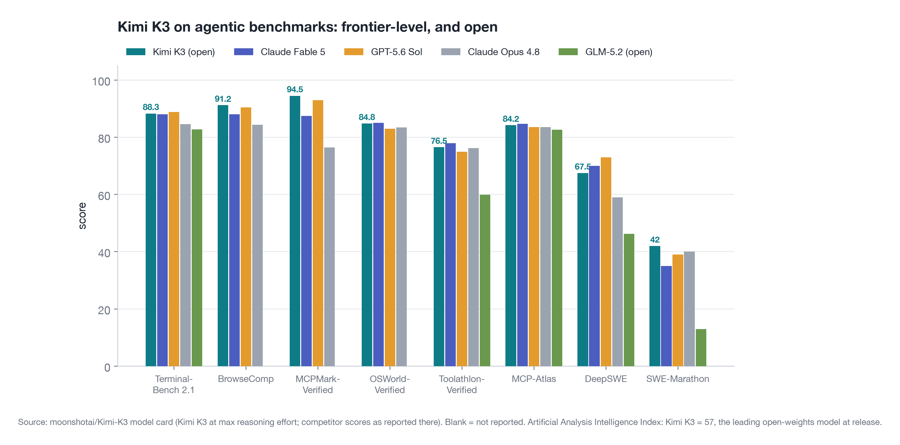
<figcaption>Figure 1. Agentic benchmarks from the Kimi K3 model card. Kimi K3 leads on BrowseComp (91.2) and MCPMark-Verified (94.5), ties the frontier on Terminal-Bench 2.1 (88.3) and OSWorld-Verified (84.8), and posts the best score on the long-horizon SWE-Marathon (42.0).</figcaption></figure>

<ul>
<li><strong>Terminal work.</strong> 88.3 on Terminal-Bench 2.1, within a point of GPT-5.6 Sol (88.8) and Claude Fable 5 (88.0). This is the benchmark our team uses for agent training, so it matters to us directly.</li>
<li><strong>Tool use and the web.</strong> 91.2 on BrowseComp, 94.5 on MCPMark-Verified, 84.2 on MCP-Atlas, 76.5 on Toolathlon-Verified: Kimi K3 is at or near the top of every tool-calling benchmark in the table.</li>
<li><strong>Long-horizon software engineering.</strong> 42.0 on SWE-Marathon, the highest in the comparison, and 67.5 on DeepSWE.</li>
<li><strong>Computer use.</strong> 84.8 on OSWorld-Verified.</li>
</ul>
<p>Thinking is always on in the API, with a <code>reasoning_effort</code> of low, high or max; the scores above are at max. In our own serving tests we turned thinking off and checked tool-call formatting on 37 prompts at temperature 0: Kimi K3 picked the right tool with the right arguments on <strong>36 of 37</strong>.</p>

<h2>The model, as the serving system sees it</h2>
<figure>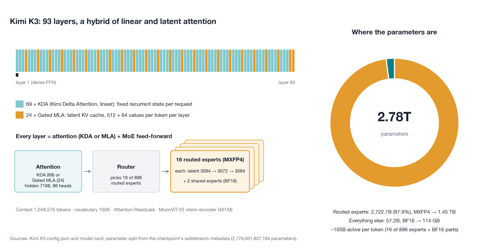
<figcaption>Figure 2. Kimi K3's architecture. 98% of the parameters are routed experts stored in 4-bit MXFP4; the 2% that every token touches (attention, shared experts, embeddings) stay in BF16.</figcaption></figure>
<p>Three things about the architecture decide how it has to be served:</p>
<ol>
<li><strong>Almost all of the weight is in experts.</strong> 92 MoE layers × 896 experts × (3 × 3584 × 3072) = 2.72T parameters, exactly what the checkpoint's metadata reports. Each token visits 16 experts per layer, so it reads only 1.8% of them.</li>
<li><strong>The experts are 4-bit by design.</strong> Moonshot trained them with quantization-aware training in <strong>MXFP4</strong> (4-bit E2M1 values, two per byte, one shared 8-bit power-of-two scale per 32 values: 4.25 bits per weight) with MXFP8 activations. Serving in 4-bit is the original model, not a lossy conversion. The 2.72T expert parameters take 1.45 TB; the 57.2B BF16 parameters take 114 GB; the checkpoint is 1.56 TB.</li>
<li><strong>Two kinds of attention.</strong> 24 layers use Gated MLA (multi-head latent attention), which caches one compressed 576-value latent per token per layer. The other 69 layers use KDA (Kimi Delta Attention), a linear attention that keeps a fixed-size recurrent state per request instead of a growing cache. That state turns out to be the most important number in this whole post.</li>
</ol>

<h2>A $200 budget and the hardware decision</h2>
<p>The weights alone are 1.56 TB. An 8× H200 node has 8 × 141 GB = 1.13 TB, so on Hopper Kimi K3 needs two nodes (16 GPUs), with the model split 16 ways across an InfiniBand link and the 4-bit experts unpacked in software, because Hopper has no FP4 hardware. A public report of that setup measured 17 tokens/s for one user. An <strong>8× B300 node has 8 × 288 GB = 2.3 TB</strong>: the whole model fits on one machine, every GPU talks to every other over NVLink, and Blackwell multiplies FP4 natively.</p>
<p>Getting the node was the hard part. On-demand 8× B300 was sold out at our usual provider in all three regions where we had quota, and so was on-demand 8× H200. Modal had B300s immediately, at $7.10 per GPU-hour ($56.80/hour for the node), but its GPU containers are preemptible. We took that trade and engineered around it, which we describe at the end. Our budget was $200; with a planned run of about an hour of node time, that left room for one or two failures. We needed it.</p>

<figure>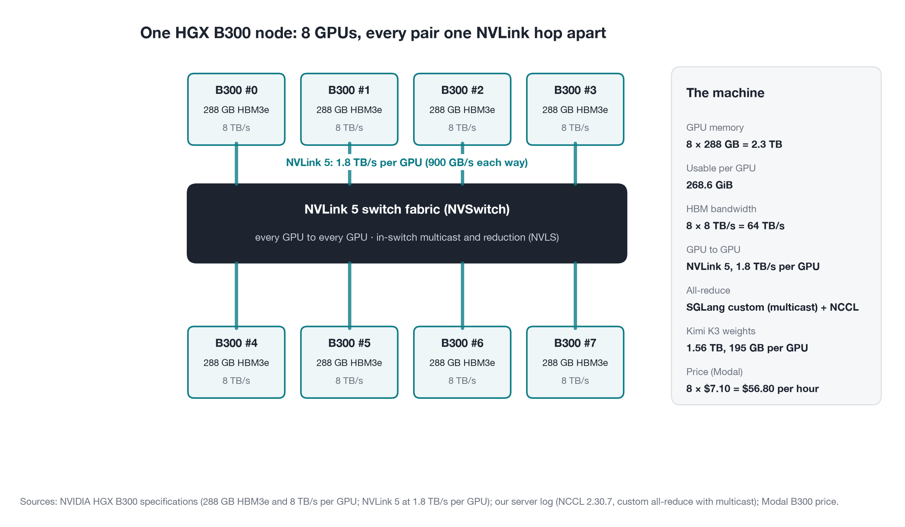
<figcaption>Figure 3. The machine. Each B300 has 288 GB of HBM3e at 8 TB/s; NVLink 5 gives each GPU 1.8 TB/s (900 GB/s each way) to the switch fabric, which can also multicast and reduce in the switch.</figcaption></figure>

<h2>Precision: what is stored in which format</h2>
<div class="tbl"><table>
<thead><tr><th>Data</th><th>Format</th><th>Why</th></tr></thead>
<tbody>
<tr><td>Routed expert weights (2.72T)</td><td>MXFP4 (4.25 bits)</td><td>trained this way; Blackwell FP4 tensor cores</td></tr>
<tr><td>Expert activations</td><td>set by the FP4 MoE kernel</td><td>trained with MXFP8; SGLang's default kernel setting</td></tr>
<tr><td>Attention, shared experts, dense layer, lm_head (57B)</td><td>BF16</td><td>left unquantized in the checkpoint</td></tr>
<tr><td>MLA KV cache</td><td>BF16 (default)</td><td>FP8 E4M3 is an option; see the kernel results</td></tr>
<tr><td>KDA recurrent state</td><td>FP32 (default)</td><td><code>--mamba-ssm-dtype bfloat16</code> would halve it</td></tr>
</tbody></table></div>
<p>We left the cache formats at SGLang's defaults for this run so that the results describe the recipe SGLang verified for B300. As we will see, the state format is the most promising thing to change next.</p>

<h2>GPU memory, to the gigabyte</h2>
<figure>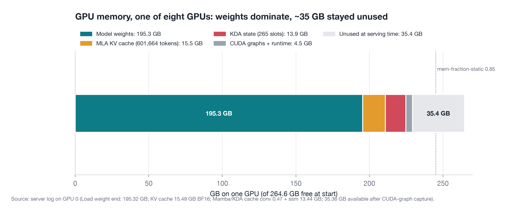
<figcaption>Figure 4. One GPU's memory from the server log. Weights take 195.3 GB; the two caches take under 30 GB; 35 GB stayed unused because of the conservative static memory fraction (0.85).</figcaption></figure>
<p>SGLang reserves memory once at startup: weights first, then a KV pool and a state pool from what is left under <code>--mem-fraction-static</code>. Here is the arithmetic, from the log of GPU 0:</p>
<ul>
<li><strong>Weights:</strong> 1.56 TB ÷ 8 ≈ 195 GB per GPU (measured 195.32 GB). Every GPU holds 1/8 of every matrix.</li>
<li><strong>MLA KV cache:</strong> one token costs 24 layers × 576 values × 2 bytes = <strong>27.6 KB</strong> across all MLA layers. With decode context parallelism (below) each GPU stores 1/8 of every request's tokens. SGLang allocated 601,664 tokens per GPU (15.5 GB), so the node holds <strong>4.81 million tokens</strong>.</li>
<li><strong>KDA state:</strong> 69 layers × 96 heads × 128 × 128 values × 4 bytes ≈ 434 MB per request for the whole model. Each GPU keeps 1/8 of the heads, about 52 MB per slot, and SGLang allocated <strong>265 slots</strong> (13.9 GB).</li>
</ul>
<p>Now the catch. With the prefix cache on, SGLang keeps <strong>5 state slots per running request</strong>: the live state plus snapshots at cached prefix boundaries, so that a later request sharing the prefix can resume from it. 265 ÷ 5 = <strong>53 requests</strong>, and the server's log says it plainly: "max_running_requests is capped to 53 by the mamba state cache."</p>

<figure>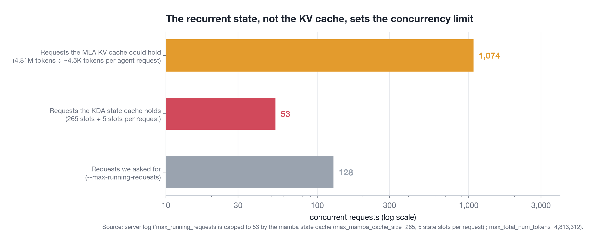
<figcaption>Figure 5. The KV cache has room for about 1,000 agent requests of ~4.5K tokens each, the state cache for 53. A running agent request holds about 2.1 GB of recurrent state across the node (5 slots × 8 GPUs × 52 MB) against about 120 MB of KV cache.</figcaption></figure>
<p>This is the same lesson we learned with Qwen3.5-27B on a 40 GB A100, where Gated DeltaNet state capped us at 9 requests. At 2.8T parameters and 2.3 TB of GPU memory, the hybrid-attention design moves the bottleneck from the KV cache to the recurrent state, and the default memory split leaves the KV pool mostly empty. Three settings would raise the cap, none of which we had budget to measure: a higher <code>--mem-fraction-static</code> (35 GB per GPU sat idle), <code>--mamba-radix-cache-strategy extra_buffer_lazy</code> (4 slots per request instead of 5), and <code>--mamba-ssm-dtype bfloat16</code> (half the bytes per slot).</p>

<h2>How the model is split across eight GPUs</h2>
<figure>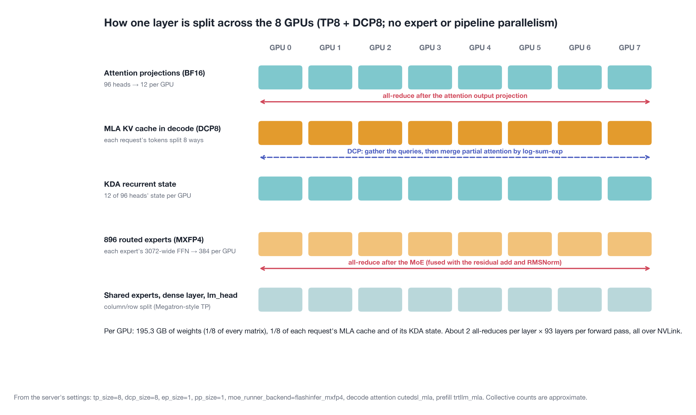
<figcaption>Figure 6. One layer across the eight GPUs, with SGLang's settings for this run: tensor parallelism 8 (TP8), decode context parallelism 8 (DCP8), no expert parallelism, no pipeline parallelism.</figcaption></figure>
<p>There are four standard ways to split a model for inference, and SGLang's verified B300 recipe uses two of them:</p>
<ul>
<li><strong>Tensor parallelism (TP8)</strong> splits every weight matrix eight ways. Attention's 96 heads become 12 per GPU; each of the 896 experts has its 3072-wide hidden layer split into 384 columns per GPU. Every GPU works on every token, and after each attention block and each MoE block the eight partial results are summed with an <strong>all-reduce</strong>.</li>
<li><strong>Decode context parallelism (DCP8)</strong> applies only to the MLA cache during decoding. Instead of every GPU keeping a full copy of every request's latent cache (what plain TP8 does, since MLA has one shared latent per token), each GPU keeps 1/8 of each request's tokens and computes all 96 heads over its slice. The partial attention outputs are merged with a log-sum-exp reduction. This is what multiplies the KV pool by eight.</li>
<li><strong>Expert parallelism</strong> (whole experts per GPU, with an all-to-all exchange of tokens) was off: <code>ep_size=1</code>. On one NVLink node, splitting every expert eight ways keeps the load perfectly balanced and avoids all-to-all traffic.</li>
<li><strong>Pipeline parallelism</strong> (layers 1–46 on some GPUs, 47–93 on others) was off too. It is the tool for multi-node setups, where it replaces bandwidth-hungry TP traffic over slower links.</li>
</ul>
<p><strong>What about FSDP?</strong> Fully sharded data parallelism is a training technique: it shards weights between data-parallel replicas and gathers them layer by layer for each step. An inference server keeps the weights resident and split by TP or EP instead, because re-gathering 1.56 TB of weights per forward pass would be far slower than serving it.</p>

<h3>The communication, in numbers</h3>
<p>With TP8 there are about two all-reduces per layer, so about 186 per forward pass. Their size depends on how many tokens are in the batch:</p>
<div class="tbl"><table>
<thead><tr><th>Phase</th><th>Tokens</th><th>One all-reduce (tokens × 7168 × 2 B)</th><th>What limits it</th></tr></thead>
<tbody>
<tr><td>Decode, 53 requests</td><td>53</td><td>760 KB</td><td>latency (a few µs each)</td></tr>
<tr><td>Prefill chunk</td><td>16,384</td><td>235 MB</td><td>bandwidth (~0.46 ms each at 900 GB/s, ring estimate)</td></tr>
</tbody></table></div>
<p>For decoding, the messages are small and the cost is the number of round trips: ~186 × ~5 µs ≈ 0.9 ms per token, an estimate, against a measured 8.7 ms per token. For prefill, a 16K-token chunk moves roughly 186 × 0.46 ms ≈ 85 ms of all-reduce traffic per GPU in the ring estimate, a real share of the ~650 ms we measured per 16K tokens of prompt.</p>
<p>The server log shows which collectives were used. SGLang's own <strong>custom all-reduce</strong> ran with symmetric memory (a 48 MB buffer every GPU can address) and <strong>NVLink multicast</strong>, so small all-reduces become a single write into the switch fabric that is reduced and broadcast in the switch. SGLang's Kimi K3 path also <strong>fuses the all-reduce with the following residual add and RMSNorm</strong>, saving a round trip to memory per layer, and NCCL 2.30.7 handled the remaining collectives. FlashInfer provides the same kind of fusion as a library call (<code>flashinfer.comm.allreduce_fusion</code>: all-reduce, residual, RMSNorm and optional FP8/FP4 quantization in one kernel); in this run SGLang's own fused path was active and the FlashInfer fusion flag was off.</p>

<h3>Where the time goes in one token</h3>
<figure>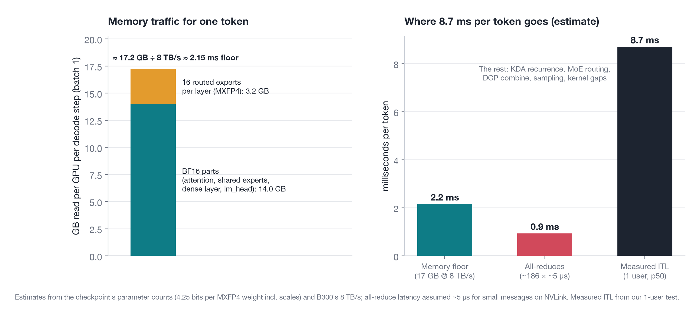
<figcaption>Figure 7. For one user, each GPU reads about 17.2 GB per token, a 2.15 ms floor at 8 TB/s. The measured 8.7 ms is about four times that floor; all-reduces explain about 1 ms, and the rest is the KDA recurrence, MoE routing, the DCP merge, sampling and gaps between kernels.</figcaption></figure>
<p>A surprise in this budget: although 98% of the parameters are 4-bit experts, at batch 1 most of the bytes come from the 2% in BF16, because every token reads all of them (14.0 GB per GPU) but only 16 of 896 experts (3.2 GB). As the batch grows, more distinct experts are touched each step, and by a few dozen requests nearly all of them are, which is where FP4 earns its keep.</p>

<h2>The serving setup</h2>
<p>The server is SGLang 0.5.23 (the <code>lmsysorg/sglang:v0.5.23-cu130</code> image: torch 2.14.1, CUDA 13, FlashInfer 0.7.2) with SGLang's verified B300 "Balanced" recipe plus our metrics and limits:</p>
<pre><code>sglang serve --model-path /models/Kimi-K3 --trust-remote-code \
  --tp-size 8 --dcp-size 8 --mem-fraction-static 0.85 \
  --reasoning-parser kimi_k3 --tool-call-parser kimi_k3 \
  --context-length 65536 --max-running-requests 128 \
  --weight-loader-prefetch-checkpoints --weight-loader-prefetch-num-threads 1 \
  --enable-metrics --enable-cache-report</code></pre>
<p>Most of the important choices are ones SGLang made for us, and its log records them:</p>
<ul>
<li><strong>MoE:</strong> <code>flashinfer_mxfp4</code>, FlashInfer's TensorRT-LLM-generated FP4 block-scale MoE kernel. At startup it autotunes 7 kernel profiles for this model's shapes, which took 3 minutes 47 seconds.</li>
<li><strong>Attention:</strong> MLA prefill with FlashInfer's <code>trtllm_mla</code> kernels, MLA decode with <code>cutedsl_mla</code> (a CuTe DSL kernel that supports DCP). Both need 64-token (or 32-token) pages, so the paged KV cache uses <strong>64-token pages</strong>.</li>
<li><strong>Prefix cache:</strong> on. 94.9% of agent prompt tokens were served from it.</li>
<li><strong>Chunked prefill:</strong> 16,384 tokens per chunk, so a long prompt is processed in slices between decode steps.</li>
<li><strong>CUDA graphs:</strong> captured for decode batches 1, 2, 4, 8, 12, … up to 53 (74 seconds, 0.5 GB). Prefill CUDA graphs are disabled for KDA models.</li>
<li><strong>Weight loading:</strong> 1.56 TB from a network volume. SGLang's default multi-threaded loader reads every shard on every one of the 8 ranks, 12.5 TB in total, and our first attempt was on track for an hour. With <code>--weight-loader-prefetch-checkpoints</code> each rank reads 1/8 of the shards into the shared page cache: <strong>6.8 minutes</strong>. With autotuning and graph capture, the server was ready 17 minutes after launch.</li>
</ul>

<h2>Phase 3: latency, throughput and concurrency</h2>
<p>We ran the same tests as for Qwen. The agent workload sends 16 different 4K-token system prompts, as an agent framework does with its instructions and tool schemas, each with a 128-token question; chat sends 1K new tokens; long sends 8K. Every answer is 256 tokens, with thinking off.</p>
<figure>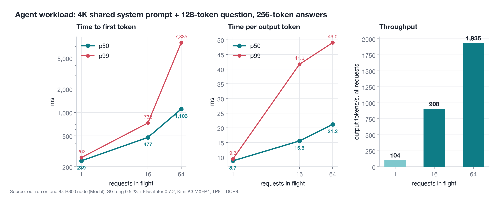
<figcaption>Figure 8. Agent workload. One user gets a token every 8.7 ms and the first token in 239 ms; at 64 concurrent requests throughput is 18.6× higher while each stream still runs at about 47 tokens/s.</figcaption></figure>
<div class="tbl"><table>
<thead><tr><th>Test</th><th>Output tok/s</th><th>TTFT p50</th><th>TTFT p99</th><th>ITL p50</th><th>ITL p99</th></tr></thead>
<tbody>
<tr><td>Agent, 1 user</td><td>104</td><td>239 ms</td><td>262 ms</td><td>8.7 ms</td><td>9.3 ms</td></tr>
<tr><td>Agent, 16</td><td>908</td><td>477 ms</td><td>732 ms</td><td>15.5 ms</td><td>41.6 ms</td></tr>
<tr><td>Agent, 64</td><td>1,935</td><td>1,103 ms</td><td>7,885 ms</td><td>21.2 ms</td><td>49.0 ms</td></tr>
<tr><td>Agent, 64 (400 requests)</td><td>2,062</td><td>684 ms</td><td>7,207 ms</td><td>21.5 ms</td><td>50.0 ms</td></tr>
<tr><td>Chat, 64</td><td>1,483</td><td>2,662 ms</td><td>10,563 ms</td><td>22.6 ms</td><td>46.1 ms</td></tr>
<tr><td>Long (8K in), 16</td><td>441</td><td>5,307 ms</td><td>5,452 ms</td><td>15.3 ms</td><td>40.7 ms</td></tr>
<tr><td>Cold start, 16</td><td>663</td><td>1,991 ms</td><td>2,617 ms</td><td>15.5 ms</td><td>35.7 ms</td></tr>
<tr><td>Poisson, 4 req/s</td><td>875</td><td>565 ms</td><td>1,866 ms</td><td>21.4 ms</td><td>248 ms</td></tr>
</tbody></table></div>
<p>No request failed in any test. What the numbers say:</p>
<ul>
<li><strong>One user is fast.</strong> 8.7 ms per token is about 115 tokens/s of reading speed, and 239 ms to the first token with a cached 4K system prompt. That is on par with the 8.4 ms we measured for the 27B Qwen on one H200, for a model 100 times larger.</li>
<li><strong>Throughput scales almost linearly to 16.</strong> 8.7× the throughput at 16 requests, with per-token time going from 8.7 to 15.5 ms.</li>
<li><strong>The prefix cache carries the agent workload.</strong> Agent requests at 64 get their first token in 1.1 s; chat requests at 64, which share nothing, wait 2.7 s.</li>
<li><strong>Long prompts cost prefill.</strong> 16 requests × 8K tokens (131K prompt tokens) take about 5.3 s to reach the first token, roughly 25K prompt tokens per second for the node.</li>
</ul>
<figure>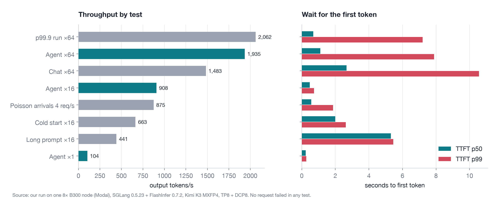
<figcaption>Figure 9. All tests. Agent traffic (teal) gets the most out of the node because its shared system prompts are served from the prefix cache.</figcaption></figure>

<h3>The 53-request cap in action</h3>
<figure>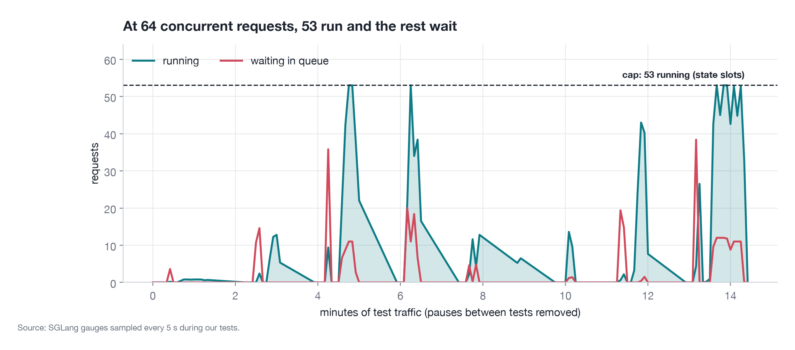
<figcaption>Figure 10. SGLang's gauges during the tests. Whenever more than 53 requests are in flight, the extra ones wait: running requests sit exactly at the cap.</figcaption></figure>
<figure>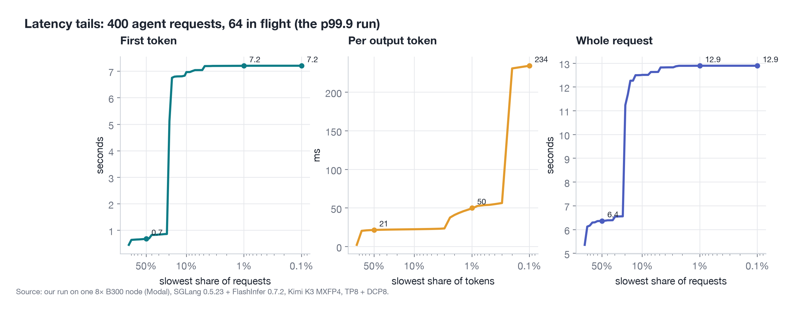
<figcaption>Figure 11. Tails of the 400-request run at 64 in flight. About 17% of requests waited ~7 s for their first token: 11 of 64 is 17%, the requests above the 53-request cap waiting for a slot.</figcaption></figure>
<p>The tail curves make the cap visible. The time to first token is under a second for 83% of requests and about 7 seconds for the slowest 17%, and 17% is almost exactly 11 of 64, the requests that do not fit under the cap and wait for someone else to finish. The per-token tail has a different cause: its slowest 0.2% of tokens take about 230 ms, and with Poisson arrivals the p99 is 248 ms. Our reading, which we did not instrument directly, is that these are decode steps sharing the GPU with a 16K-token prefill chunk; a smaller <code>--chunked-prefill-size</code> would trade prompt throughput for smoother streaming.</p>

<h2>Phase 4: inside the kernels</h2>
<p>Before starting the server we ran microbenchmarks on one GPU, at Kimi K3's exact shapes, timed inside CUDA graphs the way the server runs them. (Timed without graphs, FlashInfer's FP4 GEMM showed ~230 µs of per-call host overhead that completely hid the kernel; measuring the way production runs matters.)</p>
<h3>MLA attention, paging and DCP</h3>
<figure>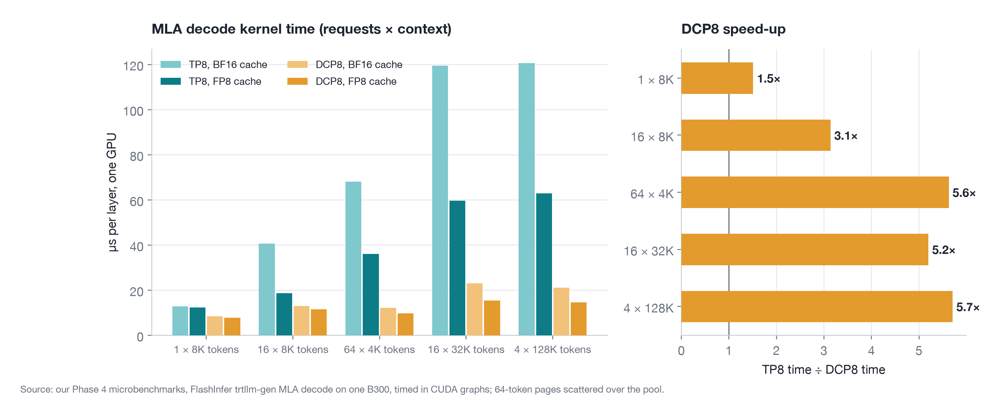
<figcaption>Figure 12. One MLA layer's decode attention on one GPU. DCP8 is 3.1× faster than TP8 at 16 requests × 8K tokens and 5.2–5.7× faster at 32K and 128K contexts.</figcaption></figure>
<ul>
<li><strong>DCP pays for itself.</strong> Under TP8 each GPU reads a full copy of every request's latent cache with 12 heads; under DCP8 it reads 1/8 of the cache with all 96 heads. At long contexts that is the difference between 120 µs and 21 µs per layer, before the small cost of merging the partial results.</li>
<li><strong>An FP8 cache halves TP8 decode time</strong> (40.6 → 18.6 µs at 16 × 8K) because TP8 is bandwidth-bound; under DCP8 the gain is smaller (12.9 → 11.5 µs) because each GPU already reads 8× less.</li>
<li><strong>Paging is free.</strong> Scattering the 64-token pages across the pool, as a busy server does, changed decode time by less than 3% in every case (for example 40.9 vs 40.6 µs at 16 × 8K).</li>
</ul>
<h3>Number formats on Blackwell</h3>
<figure>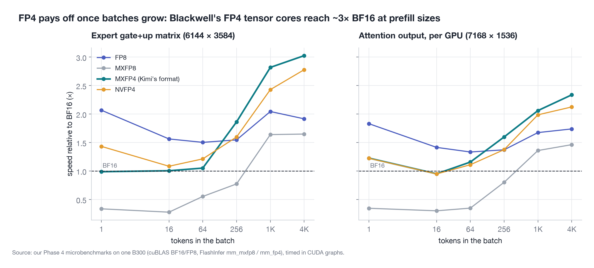
<figcaption>Figure 13. Speed relative to BF16. MXFP4 reaches 3.0× BF16 on the expert matrix at 4,096 tokens (5.3 PFLOPS on one GPU, against 1.7 for BF16 and 3.3 for FP8). At small batches, single small matrices are latency-bound and FP8 is fastest.</figcaption></figure>
<p>For prefill-sized batches, Blackwell's FP4 tensor cores deliver: 5.3 PFLOPS for MXFP4 against 1.7 PFLOPS for BF16 on one expert matrix. At decode-sized batches one expert matrix is only 22 MB and finishes in 4–8 µs in any format, so the 4-bit advantage shows up through the fused MoE kernel, which processes all 16 experts of a layer at once, rather than in a single GEMM. At prefill sizes MXFP4 and NVFP4 performed within about 10% of each other (34 vs 37 µs at 4,096 tokens); NVFP4's finer scaling (an FP8 scale per 16 values instead of a power of two per 32) costs little speed.</p>
<p><strong>First use costs.</strong> The first call of a new kernel variant took up to 3 seconds (MLA under DCP) or 9.5 seconds (the first BF16 GEMM, loading cuBLAS), and the MoE autotune took almost 4 minutes at server start. A production image should ship its JIT and autotune caches.</p>

<h2>Cost</h2>
<figure>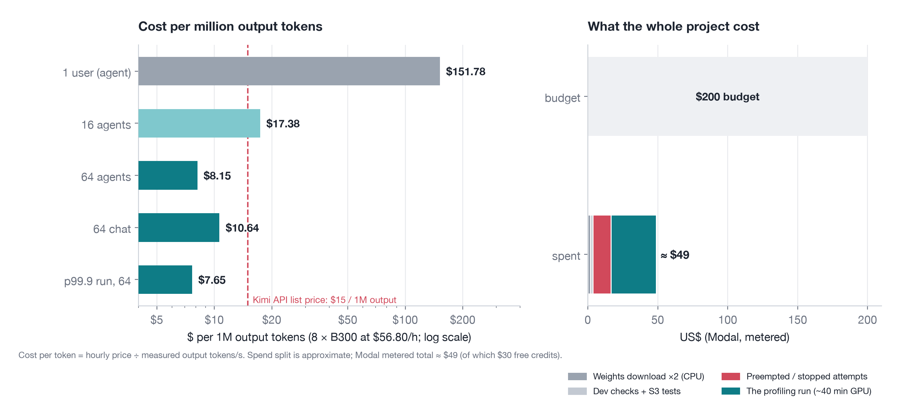
<figcaption>Figure 14. Left: cost per million output tokens at the measured throughput. Right: what the project cost, against the $200 budget.</figcaption></figure>
<ul>
<li><strong>At 64 concurrent agent sessions</strong> the node produces output tokens at about <strong>$7.65–8.15 per million</strong>, half of the Kimi API's list price of $15 per million output tokens, while keeping every prompt and response on hardware you control.</li>
<li><strong>For one user</strong> the same node costs $152 per million output tokens: a 2.8T model is not the economical choice for a single developer, and the hosted API is.</li>
<li><strong>The project</strong> cost about $49 in metered compute, of which $30 was free credit. That includes downloading 1.56 TB of weights twice, two runs lost to a preemption and a slow loader, and the 40-minute profiling run itself.</li>
</ul>

<h2>Profiling on preemptible GPUs</h2>
<figure>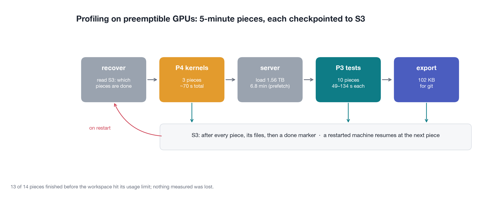
<figcaption>Figure 15. The run as 5-minute pieces. After each piece its results and a done marker go to S3; a restarted machine reads S3 and continues at the next piece.</figcaption></figure>
<p>Our first attempt was preempted six minutes into loading the weights, and Modal restarted it from the beginning. So we split the run into 14 pieces of at most five minutes (three kernel benchmarks, ten serving tests and an export), each uploaded to S3 with a "done" marker the moment it finished, plus a <code>recover_and_check_status</code> step that runs at every start, restores results from S3 and continues at the next unfinished piece. A total time budget and an attempt limit also live in storage, so that restarts cannot run up the bill. The final run finished 13 of the 14 pieces before our account hit its spending limit; only a 256-request burst test was lost, and nothing measured was.</p>

<h2>What we would change next time</h2>
<ol>
<li><strong>Raise the concurrency cap.</strong> Spend the 35 GB per GPU that sat idle on state slots, use 4 slots per request instead of 5 (<code>extra_buffer_lazy</code>), and try a BF16 state. Any of these should lift the 53-request cap and remove the 7-second first-token tail.</li>
<li><strong>Try the FP8 KV cache.</strong> It halves MLA decode time under TP8 and would double the KV pool, though under DCP8 the kernel gain is smaller.</li>
<li><strong>Tune chunked prefill</strong> for smoother token streaming when long prompts arrive.</li>
<li><strong>Ship warm caches</strong> (JIT kernels and the 4-minute MoE autotune) in the image, and load weights with prefetch.</li>
</ol>

<h2>Reproduce it</h2>
<p>Everything is in our repository under <code>aees/serving</code>: the Modal launcher, the server script, the 5-minute piece runner with S3 recovery, the benchmark scripts and the exported results.</p>
<pre><code>modal run modal_kimi_k3.py::download              # 1.56 TB of weights into a Modal volume, CPU only (~12-24 min)
modal run --detach modal_kimi_k3.py::run          # 8x B300: kernels, server, serving tests, export
python pieces_kimi_k3.py status --run-id &lt;id&gt;     # which pieces are done, read from S3
modal run modal_kimi_k3.py::teardown --confirm    # back up results to S3, delete the volumes</code></pre>

<p class="sign">With love from the Geodesic team.</p>

<h2>Sources</h2>
<ul class="sources">
<li>Moonshot AI, <a href="https://huggingface.co/moonshotai/Kimi-K3">Kimi K3 model card and checkpoint</a> (architecture, benchmarks, MXFP4 quantization-aware training; revision f831ab66).</li>
<li>Artificial Analysis, <a href="https://x.com/ArtificialAnlys/status/2081821449745236270">Kimi K3 weights release and Intelligence Index</a>, <a href="https://x.com/ArtificialAnlys/status/2077832874183860404">launch evaluation</a> and <a href="https://artificialanalysis.ai/models/kimi-k3">model page</a>.</li>
<li>Nathan Lambert, <a href="https://www.interconnects.ai/p/kimi-k3-the-open-weights-escalation">Kimi K3: the open-weights escalation</a> (Interconnects).</li>
<li>SGLang, <a href="https://docs.sglang.io/cookbook/autoregressive/Moonshotai/Kimi-K3">Kimi-K3 cookbook</a> (verified B300 recipes).</li>
<li>FlashInfer, <a href="https://docs.flashinfer.ai/generated/flashinfer.comm.allreduce_fusion.html">allreduce_fusion</a> and <a href="https://docs.flashinfer.ai/api/comm.html">communication API</a>.</li>
<li>NVIDIA HGX B300 specifications, as summarized in <a href="https://docs.nvidia.com/enterprise-reference-architectures/hgx-ai-factory/latest/components.html">NVIDIA's HGX AI Factory reference architecture</a>.</li>
<li>Kimi-K3 on 16× H200: <a href="https://huggingface.co/moonshotai/Kimi-K3/discussions/136">community deployment report</a>.</li>
<li>Modal, <a href="https://modal.com/pricing">pricing</a> and <a href="https://modal.com/docs/guide/preemption">preemption</a>.</li>
<li>Our results: the run's exported data and scripts in the Geodesic repository (<code>aees/serving/bench_results/kimi-k3_b300_kimi-20261103-145854</code>).</li>
</ul>
</article>
